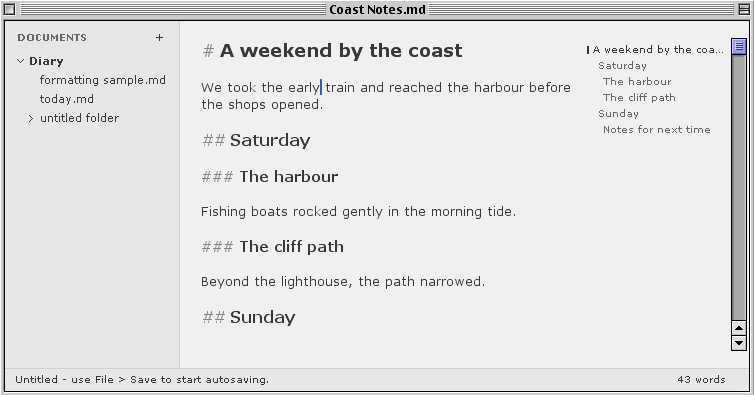
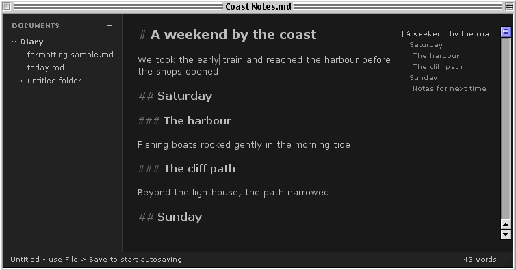

Writing in Linewren
Open a folder of text files and pick up where you left off. Markdown formatting appears as you type, and the optional outline lets you jump to a heading. Quick Open finds files by name, and Find and Replace works in the current document.
Focus mode hides the sidebar and outline. Choose light or dark mode, turn on typewriter scrolling, or adjust the typeface and size. Autosave and draft recovery help protect your work.

Download
- Mac OS 9
- Extract the ZIP, then decode
Linewren.binwith a MacBinary-aware utility on the Mac. - PowerPC Mac OS X
- Mount the DMG for Tiger or Leopard and copy Linewren to Applications.